I'm Kristine — a General Virtual Assistant, DM Setter & WordPress Website Designer from Butuan City, Philippines. I keep your inbox and DMs managed, your sales conversations closing, and your WordPress site polished, on time and dependable.
I'm a Bachelor of Science in Information System graduate from Caraga State University with hands-on experience as a General Virtual Assistant, DM Setter and WordPress Website Designer.
I'm proficient in Microsoft Office (Word, Excel, PowerPoint), Google Workspace (Docs, Sheets, Drive, Gmail), Canva and other productivity tools for organizing tasks and managing information efficiently. I also build and maintain WordPress websites with Elementor, and bring working knowledge of HTML, CSS, JavaScript and MySQL.
I'm detail-oriented, organized, a fast learner, and committed to giving businesses and clients reliable, dependable remote support.
Three separate client engagements, plus hands-on experience through university-affiliated programs.
Handling emails, files and day-to-day admin work, plus graphic design support — the ongoing tasks that keep your business moving.
Acting as the business owner's voice — handling sales conversations and answering inquiries in the DMs, from lead qualification to closing.
Websites designed in WordPress with Elementor — client details and content put together into a clean layout.
Real WordPress website design work built using Elementor, plus graphic design samples across menus, posters and welcome packets.
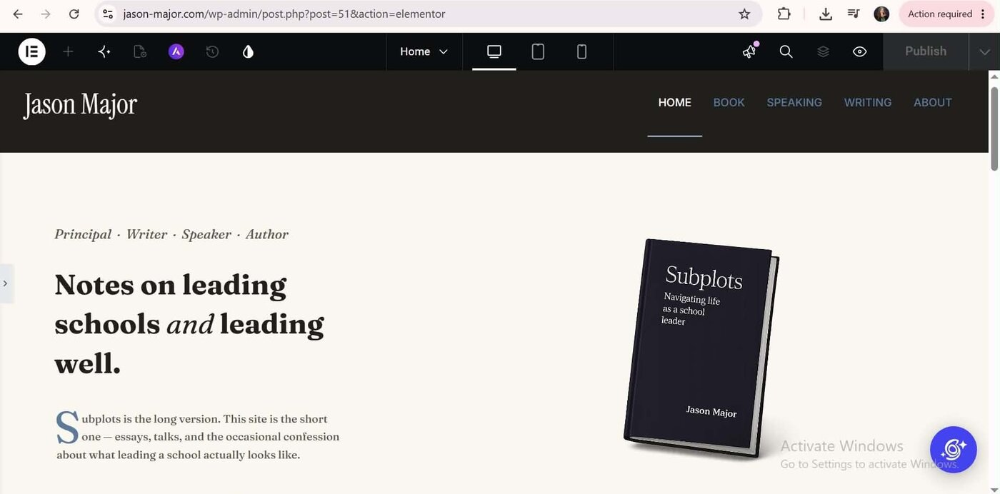
Homepage built for an author/speaker's personal website, designed with a clean, editorial layout featuring their book and clear positioning as principal, writer, speaker and author.
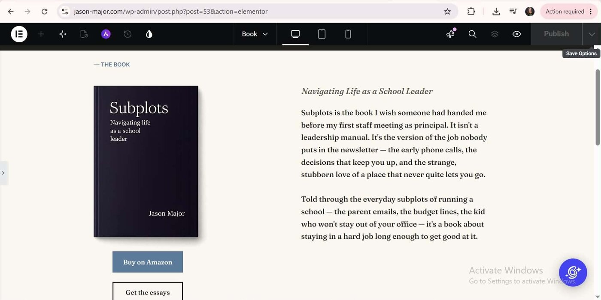
Dedicated book page featuring the book cover, description and a direct link to purchase on Amazon.
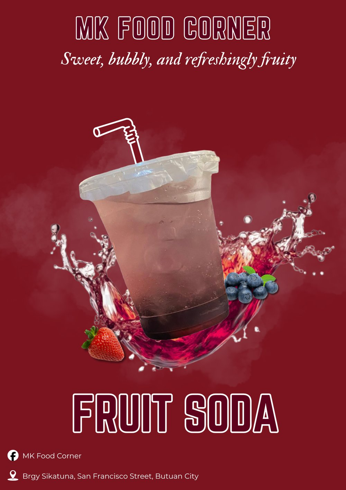
Promotional poster design
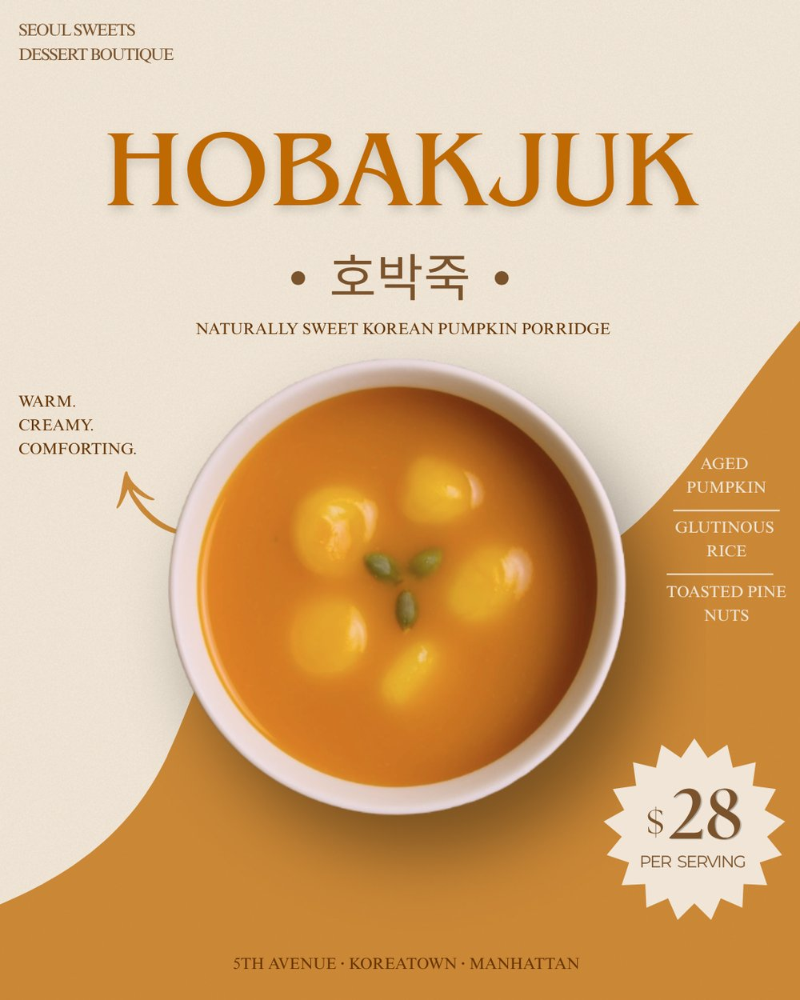
Dessert boutique menu design
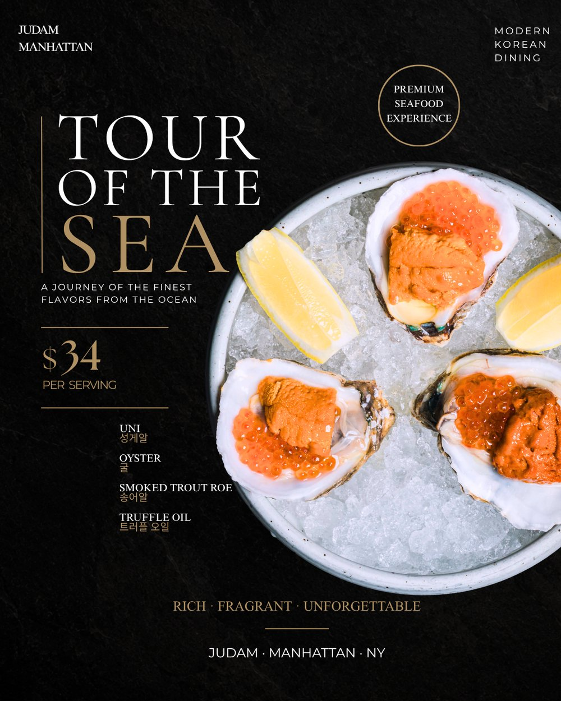
Modern Korean dining menu design
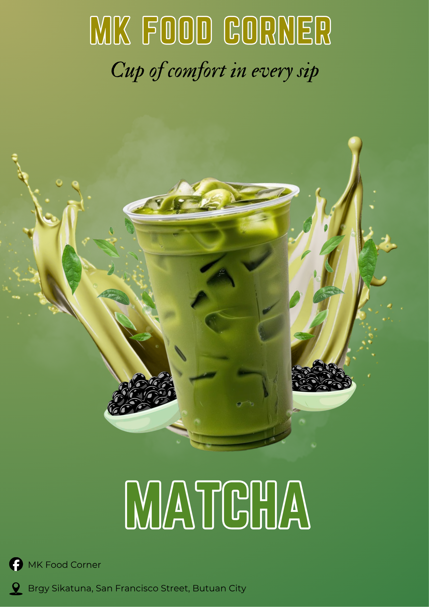
Promotional poster design
Database-driven systems from my Information System coursework and internship, shown here to demonstrate the technical foundation behind my work.
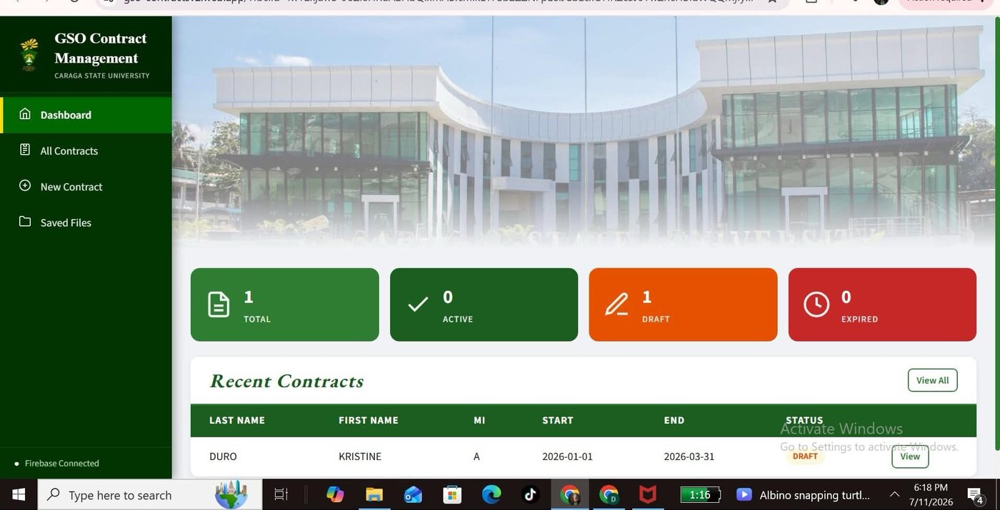
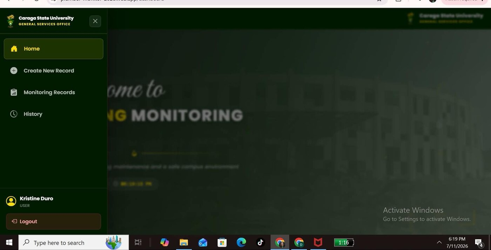
Self-paced SoloLearn courses completed to build my web fundamentals.
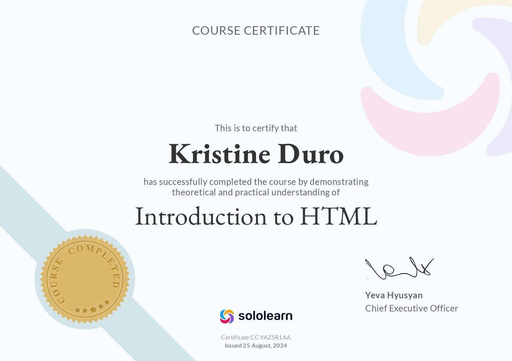
SoloLearn · Issued 25 Aug 2024
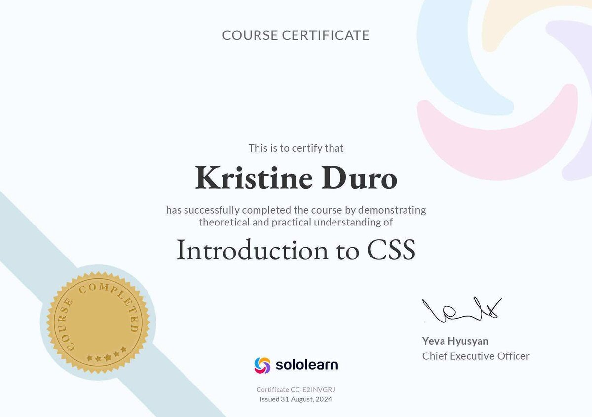
SoloLearn · Issued 31 Aug 2024
SoloLearn · Issued 16 Nov 2024
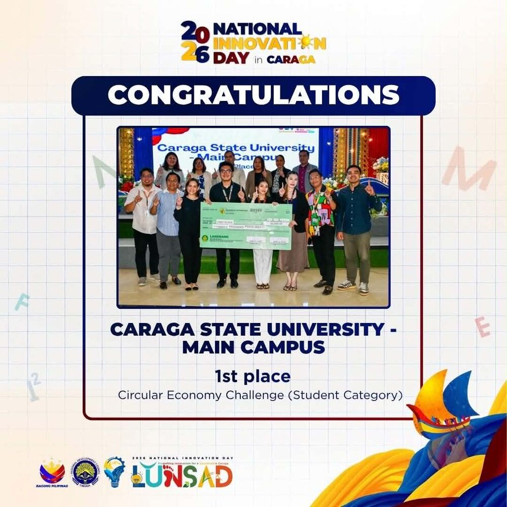
Also recognized as Champion, AI Hackathon and Pitching Competition
2026 National Innovation Day in Caraga (LUNSAD). Team member representing Caraga State University – Main Campus, recognized for the winning "EcoBarangay" e-waste solution.
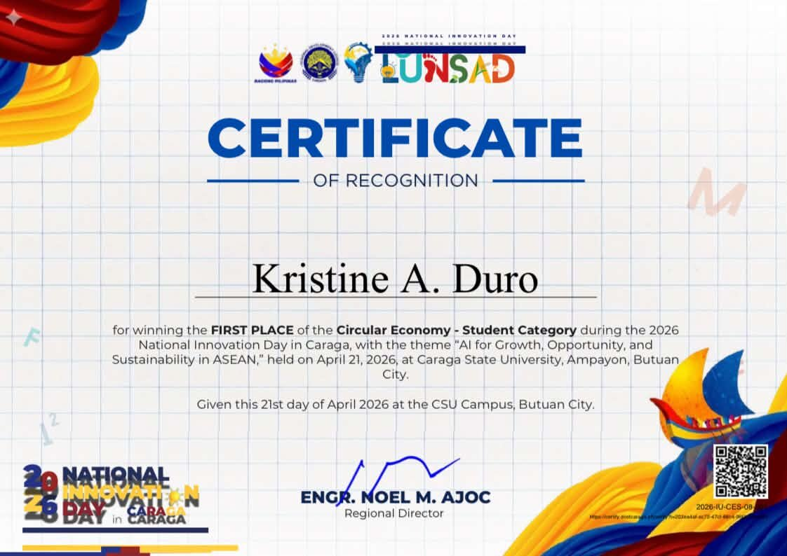
Official Certificate of Recognition for the 1st Place win, Circular Economy — Student Category, representing Caraga State University – Main Campus, 2026.
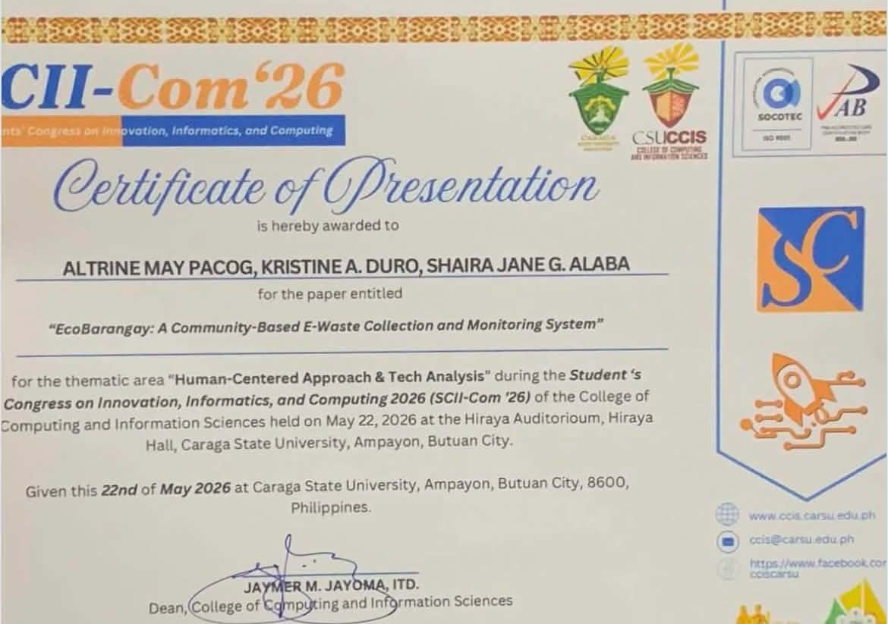
Student's Congress on Innovation, Informatics & Computing (SCII-Com '26) — presented "EcoBarangay: A Community-Based E-Waste Collection and Monitoring System" under Human-Centered Approach & Tech Analysis, May 22, 2026, Caraga State University.
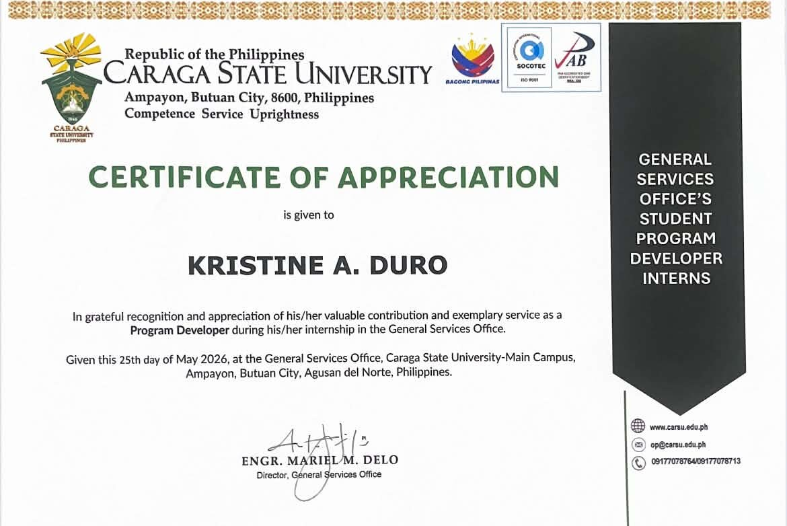
General Services Office, Caraga State University — recognized as a Program Developer intern for valuable contribution and exemplary service, May 25, 2026.
I usually reply within a day. Reach out and tell me what you need help with.